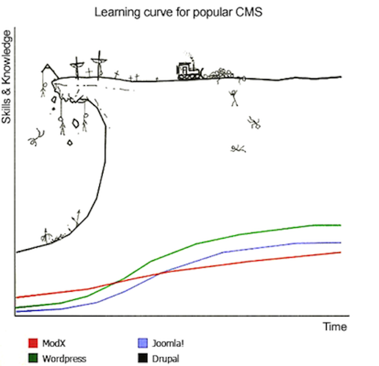
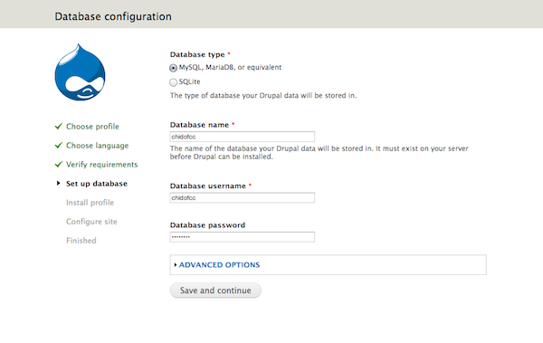
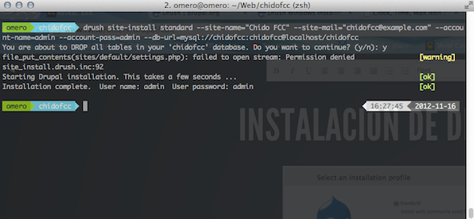

Drupal MeetUp
The Best CMS for build your Websites and more...
Created by Softlite Solutions / @omers
Web Developer, Drupalero, Mobile Developer (iOS Especialist)
- Softlite Solutions / @omers/ Drupal ID: omers /Git User: omero
¿Pero que ... hago aquí?
Compartiremos, discutiremos y fortaleceremos la comunidad Drupalera en México En este evento(Slides), se dará una introducción al poderoso CMS Drupal
¿Qué es Drupal?
- Es un sistema de gestión de contenido(CMS) modular multipropósito y muy configurable.
- Originalmente fue Escrito por: Dries Buytaert.
- La característica principal de Drupal es su Comunidad en todo el mundo.
- Claro! es Software Libre \m/ protegido por Licencia GPLv2/GPLv3.
Módulos
Módulos

Nodo
Taxonomia
Region
Drupal se encuentra dividido en Regiones (regions) que pueden incluir la cabecera, el pie, las barras laterales, la sección principal de contenido.
Bloque y Menus
Los Bloques (blocks) es la información que se visualiza en las diferentes regiones, pudiendo tomar la forma de menús (como el menú de navegación) o visualizaciones de módulos (como los contenidos más vistos del foro) o información estática o dinámica que fue creada por un usuario (como eventos)
Comunidad
La característica principal de drupal es su cominidad que esta en constante crecimiento la comunidad latina ahora es:
- Nicaragua.
- Costarica.
- Panama.
- Colombia.
- Perú.
- Guatemala.
- Ecuador.
- Bolivia.
- Brazil.
- México.
Comunidad en México
Actualmente la comunidad Mexicana en Drupal aún no detona, es por ello que se impulsa este tipo de eventos, para que la comunidad tome fuerza y pueda ser reconocida formalmente a nivel internacional. Con esto me refiero a Generar Developers que puedan mantener módulos y no solamente consumir.
Sitio Web: drupalmexico.com
Group: groups.drupal.org/mexico
Guadalajara
Guadalajara fue en el primer estado donde se ha iniciado una comunidad fuerte en Drupal. Donde ha sido sede este año del:
Drupal Summit Latino
Puebla
groups.drupal.org/puebla
Puebla
En Puebla esta iniciando el movimiento Drupalero, prueba de ello es este evento y sobre todo que se realizará el primer:
DrupalCamp México - Puebla 2013
¿MeetUp?
Este MeetUp es un eventos de los más importantes en México, ya que estamos siendo de los primeros en participar y hacer crecer la comunidad.
DrupalCamp México
Abril 2013 - CCU BUAP
http://drupalcamp.mx @DrupalCampMx facebook/DrupalCampMxDrupaleros en Puebla
@istodi, @softlitem, @dmouse, @omers, @FoxBuru, @insaneisnotfree, @Cerr0s , @agb8081, @wipCamino de un Drupalero
¿Porqué debería ser Drupalero?
Porque es un estilo de vida
¿Estilo de Vida de un Drupalero?
Sitios en Drupal
menos platica !!!
mas accion !!!
asi nos sentimos .....
pero en realidad..
asi nos vemos !!! ...
Pero tranquilos asi
acabaremos..
asi que ...

manos a la obra¡¡¡
chido fcc
fcc buap
Instalacion de drupal (manual)
Seleccionamos lenguaje
Configuracion de nuestra db
esperamos.......
Configuramos el sito
- Nombre del sitio
- E-mail del sitio
- Nombre de Usuario (admin)
- Contraseña de Usuario (admin)
guardamos y ........
" Listo "
que hueva ¡¡¡
INSTALACION DE DRUPAL (drush)
Que tedioso hacer tantos clicks y esperar,
si podemos hacer este mismo procedimineto en
menos pasos y menos tiempo, que haciéndolo
de forma manual.
que es drush

como consigo drush
regresando a nuestro asunto..
comandos de instalacion de drupal (drush)
Instalamos (site install)
drush site-install standard --site-name="[nombre del sitio]" --site-mail="[mail del sitio]" --account-name=[nombre administrador] --account-pass=[pass administrador] --db-url=mysql://[usuario DB]:[passde usuario de la DB]@localhost/[nombre de la DB]

momento de ver nuestro sitio
modulos
algunos modulos que utilizaremos para nuestro sitio
- Views
- Admin Menu
- ColorBox
- Media
- Localization update
Instalacion de modulos (manual)
- Buscamos nuestro modulo
- Descargamos
- Lo ponemos en nuestra carpeta de modulos
- Descomprimimos
- Lo activamos desde nuestro sitio
- Listo¡
instalacion de modulos (drush)
- Descargamos nuestro modulo:
- Instalamos el modulo: